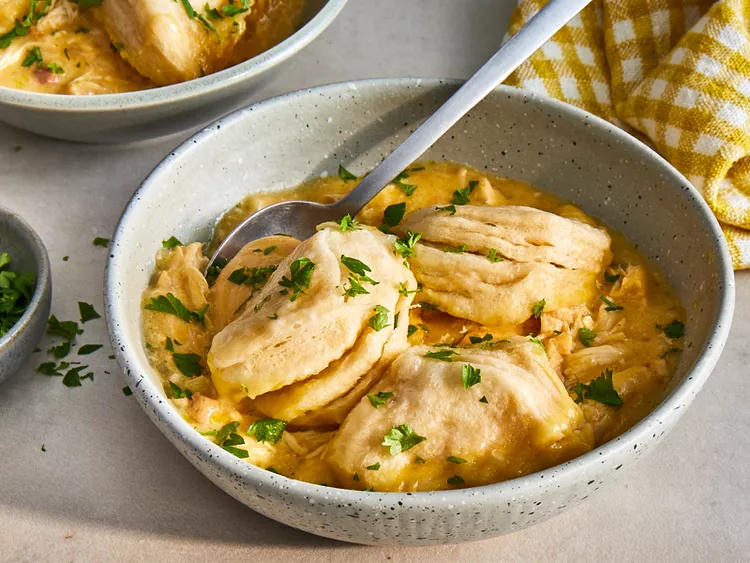

Slow Cooker Chicken and Dumplings Recipe

Description
A sure-fire way to bring everyone at your table together? Chicken and dumplings! This top-rated, crowd-pleasing recipe is beloved by the Allrecipes community. Plus, it comes together with just five basic ingredients you probably already have on hand. You can't ask for much more than that, folks.
Ingredients
- chicken breasts (or thighs)
- unsalted butter
- onion
- dried parsley
- seasoned salt
- garlic powder
- poultry seasoning
- chicken broth
- cream of mushroom soup
- canned, regular size buttermilk biscuits
Steps
- To get started, simply add some chicken, a chopped onion, spices, a little butter, chicken broth, and some cream of chicken soup to the bowl of your crockpot. Cook it all together on low for 6-8 hours, or high for 4-5 hours.
- After you’ve let it all cook for at least 4 hours on high or 6 hours on low, remove the lid and use a fork to break up the chicken, stirring everything well.
- Chop up some refrigerated biscuits into quarter size chunks and add to the slow cooker. Push them down so that they soak up the gravy while they cook.
- I also like to scoop up some of the gravy from the crockpot and pour it over the top. Put the lid back on and cook your crockpot chicken and dumplings for 1 more hour on high.
Return to recipes